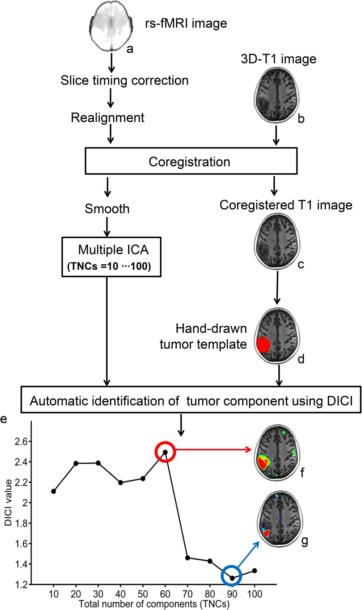
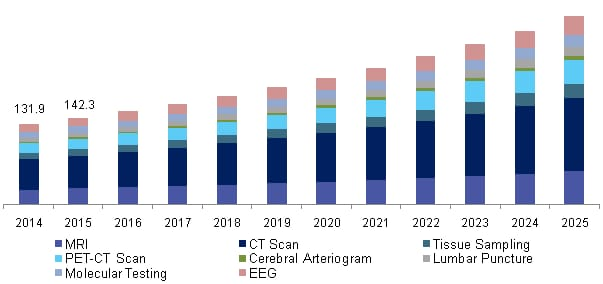

Below is an image of a brain tumor:
 A brain tumor is a growth of cells in the brain or near it. They can occur in brain tissue or nearby locations such as nerves, the pituitary gland, and the membranes covering the brain surface. Brain tumors can be:
Medical professionals use various techniques for brain tumor analysis:
Common imaging modalities include MRI, CT, and PET scans. PET scans can detect brain tumors by using a radioactive tracer that attaches to tumor cells.
Remember that early detection and accurate analysis are crucial for effective treatment. Consult a medical professional for personalized advice.